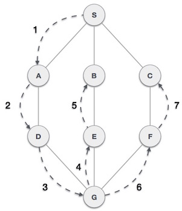
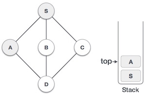
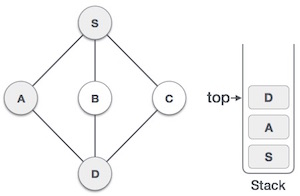
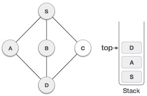
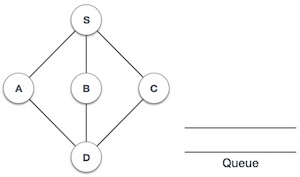
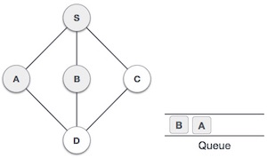

Cấu trúc dữ liệu Đồ thị là gì?
Một đồ thị (đồ thị) là một dạng biểu diễn hình ảnh của một tập các đối tượng, trong đó các cặp đối tượng được kết nối bởi các link. Các đối tượng được nối liền nhau được biểu diễn bởi các điểm được gọi là các đỉnh (vertices), và các link mà kết nối các đỉnh với nhau được gọi là các cạnh (edges).
Nói chung, một đồ thị là một cặp các tập hợp (V, E), trong đó V là tập các đỉnh và E là tập các cạnh mà kết nối các cặp điểm. Bạn theo dõi đồ thị sau:

Trong đồ thị trên:
V = {a, b, c, d, e}
E = {ab, ac, bd, cd, de}
Cấu trúc dữ liệu Đồ thị
Các hình toán học có thể được biểu diễn trong cấu trúc dữ liệu. Chúng ta có thể biểu diễn một hình bởi sử dụng một mảng các đỉnh và một mảng hai chiều của các cạnh. Trước khi tiếp tục, chúng ta tìm hiểu một vài khái niệm quan trọng sau:
- Đỉnh (Vertex) : Mỗi nút của hình được biểu diễn như là một đỉnh. Trong ví dụ dưới đây, các hình tròn biểu diễn các đỉnh. Do đó, các điểm từ A tới G là các đỉnh. Chúng ta có thể biểu diễn các đỉnh này bởi sử dụng một mảng, trong đó đỉnh A có thể được nhận diện bởi chỉ mục 0, điểm B là chỉ mục 1, … như hình dưới.
- Cạnh (Edge) : Cạnh biểu diễn một đường nối hai đỉnh. Trong hình dưới, các đường nối A và B, B và C, … là các cạnh. Chúng ta có thể sử dụng một mảng hai chiều để biểu diễn các cạnh này. Trong ví dụ dưới, AB có thể được biểu diễn như là 1 tại hàng 0; BC là 1 tại hàng 1, cột 2, …
Kề nhau: Hai đỉnh là kề nhau nếu chúng được kết nối với nhau thông qua một cạnh. Trong hình dưới, B là kề với A; C là kề với B, …
- Đường : Đường biểu diễn một dãy các cạnh giữa hai đỉnh. Trong hình dưới, ABCD biểu diễn một đường từ A tới D
- Bước 4 : Nếu giá trị của cha là nhỏ hơn con thì tráo đổi chúng.
- Bước 5 : Lặp lại bước 3 và 4 cho tới khi vẫn duy trì thuộc tính của Heap.

Các thao tác cơ bản trên cấu trúc dữ liệu đồ thị
- Thêm đỉnh: : Thêm một đỉnh vào trong đồ thị.
- Thêm cạnh : Thêm một cạnh vào giữa hai đỉnh của một đồ thị.
- Hiển thị đỉnh : Hiển thị một đỉnh của một đồ thị.
Giải thuật tìm kiếm theo chiều sâu
Giải thuật tìm kiếm theo chiều sâu (Depth First Search – viết tắt là DFS), còn được gọi là giải thuật tìm kiếm ưu tiên chiều sâu, là giải thuật duyệt hoặc tìm kiếm trên một cây hoặc một đồ thị và sử dụng stack (ngăn xếp) để ghi nhớ đỉnh liền kề để bắt đầu việc tìm kiếm khi không gặp được đỉnh liền kề trong bất kỳ vòng lặp nào. Giải thuật tiếp tục cho tới khi gặp được đỉnh cần tìm hoặc tới một nút không có con. Khi đó giải thuật quay lui về đỉnh vừa mới tìm kiếm ở bước trước.

Trong hình minh họa trên, giải thuật tìm kiếm theo chiều sâu đầu tiên duyệt từ các đỉnh A tới B tới C tới D sau đó tới E, sau đó tới F và cuối cùng tới G. Giải thuật này tuân theo qui tắc sau:
- Qui tắc 1: : Duyệt tiếp tới đỉnh liền kề mà chưa được duyệt. Đánh dấu đỉnh mà đã được duyệt. Hiển thị đỉnh đó và đẩy vào trong một ngăn xếp (stack).
- Qui tắc 2 : Nếu không tìm thấy đỉnh liền kề, thì lấy một đỉnh từ trong ngăn xếp (thao tác pop up). (Giải thuật sẽ lấy tất cả các đỉnh từ trong ngăn xếp mà không có các đỉnh liền kề nào)
- Qui tắc 3 :Lặp lại các qui tắc 1 và qui tắc 2 cho tới khi ngăn xếp là trống
Bảng dưới đây minh họa các qui tắc với hình ví dụ trên:
| Bước | Duyệt | Mô tả |
|---|---|---|
| 1 |

|
Khởi tạo ngăn xếp (stack) |
| 2 |

|
Đánh dấu đỉnh S là đã duyệt và đặt đỉnh này vào trong ngăn xếp. Tìm kiếm bất kỳ đỉnh liền kề nào mà chưa được duyệt từ đỉnh S. Chúng ta có 3 đỉnh và chúng ta có thể lấy bất kỳ đỉnh nào trong số chúng. Ví dụ, chúng ta lấy đỉnh A theo thứ tự chữ cái. |
| 3 |

|
Đánh dấu đỉnh A là đã duyệt và đặt vào trong ngăn xếp. Tìm kiếm bất kỳ đỉnh liền kề nào với đỉnh A. Cả S và D đều là hai đỉnh liền kề A nhưng chúng ta chỉ quan tâm về đỉnh chưa được duyệt. |
| 4 |

|
Duyệt đỉnh D, đánh dấu đỉnh này là đã duyệt và đặt vào trong ngăn xếp. Ở đây, chúng ta có B và C là hai đỉnh kề với D và cả hai đều là chưa được duyệt. Chúng ta sẽ chọn theo thứ tự chữ cái một lần nữa. |
| 5 |
|
Chọn B, đánh dấu là đã duyệt và đặt vào trong ngăn xếp. Ở đây B không có bất kỳ đỉnh liền kề nào mà chưa được duyệt. Vì thế chúng ta lấy B ra khỏi ngăn xếp. |
| 6 |

|
Kiểm tra phần tử trên cùng của ngăn xếp để trở về nút đã duyệt trước đó và kiểm tra xem đỉnh này có đỉnh nào liền kề mà chưa được duyệt hay không. Ở đây, chúng ta tìm thấy đỉnh D nằm ở trên cùng của ngăn xếp. |
| 7 |
|
Chỉ có một đỉnh liền kề với D mà chưa được duyệt, đó là đỉnh C. Chúng ta duyệt C, đánh dấu là đã duyệt và đặt vào trong ngăn xếp. |
Vì C không có bất kỳ đỉnh nào liền kề mà chưa được duyệt, chúng ta tiếp tục lấy các đỉnh từ trong ngăn xếp để tìm xem có còn bất kỳ đỉnh nào liền kề mà chưa được duyệt hay không. Trong ví dụ này là không có, và chúng ta vẫn tiếp tục cho tới khi ngăn xếp là trống.
Giải thuật tìm kiếm theo chiều rộng
Giải thuật tìm kiếm theo chiều rộng (Breadth First Search – viết tắt là BFS) duyệt qua một đồ thị theo chiều rộng và sử dụng hàng đợi (queue) để ghi nhớ đỉnh liền kề để bắt đầu việc tìm kiếm khi không gặp được đỉnh liền kề trong bất kỳ vòng lặp nào.
Như trong hình ví dụ trên, giải thuật tìm kiếm theo chiều rộng duyệt từ A tới B tới E tới F sau đó tới C, tới G và cuối cùng tới D. Giải thuật này tuân theo qui tắc:
- Qui tắc 1: : Duyệt tiếp tới đỉnh liền kề mà chưa được duyệt. Đánh dấu đỉnh mà đã được duyệt. Hiển thị đỉnh đó và đẩy vào trong một hàng đợi (queue)..
- Qui tắc 2 : Nếu không tìm thấy đỉnh liền kề, thì xóa đỉnh đầu tiên trong hàng đợi.
- Qui tắc 3 :Lặp lại Qui tắc 1 và 2 cho tới khi hàng đợi là trống.
Bảng dưới đây minh họa các qui tắc với hình ví dụ trên:
| Bước | Duyệt | Mô tả |
|---|---|---|
| 1 |

|
Khởi tạo hàng đợi (queue) |
| 2 |

|
Chúng ta bắt đầu duyệt đỉnh S (đỉnh bắt đầu) và đánh dấu đỉnh này là đã duyệt. |
| 3 |

|
Sau đó chúng ta tìm đỉnh liền kề với Smà chưa được duyệt. Trong ví dụ này chúng ta có 3 đỉnh, và theo thứ tự chữ cái chúng ta chọn đỉnh A đánh dấu là đã duyệt và xếp A vào hàng đợi. |
| 4 |

|
Tiếp tục duyệt đỉnh liền kề với S là B. Đánh dấu là đã duyệt và xếp đỉnh này vào hàng đợi. |
| 5 |

|
Tiếp tục duyệt đỉnh liền kề với S là C. Đánh dấu là đã duyệt và xếp đỉnh này vào hàng đợi. |
| 6 |

|
Bây giờ đỉnh S không còn đỉnh nào liền kề mà chưa được duyệt. Bây giờ chúng ta rút A từ hàng đợi. |
| 7 |

|
Từ đỉnh A chúng ta có đỉnh liền kề là D và là đỉnh chưa được duyệt. Đánh dấu đỉnh D là đã duyệt và xếp vào hàng đợi. |